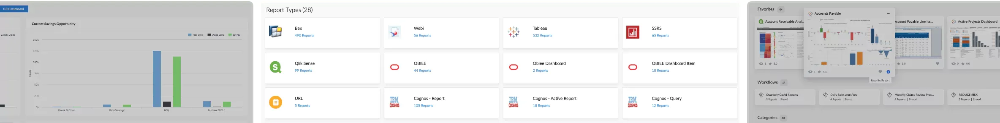
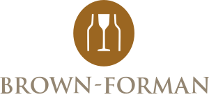
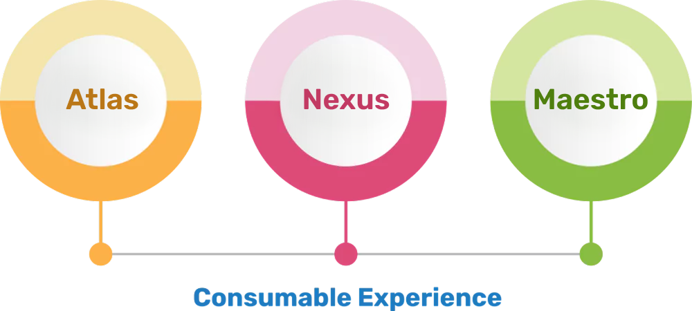
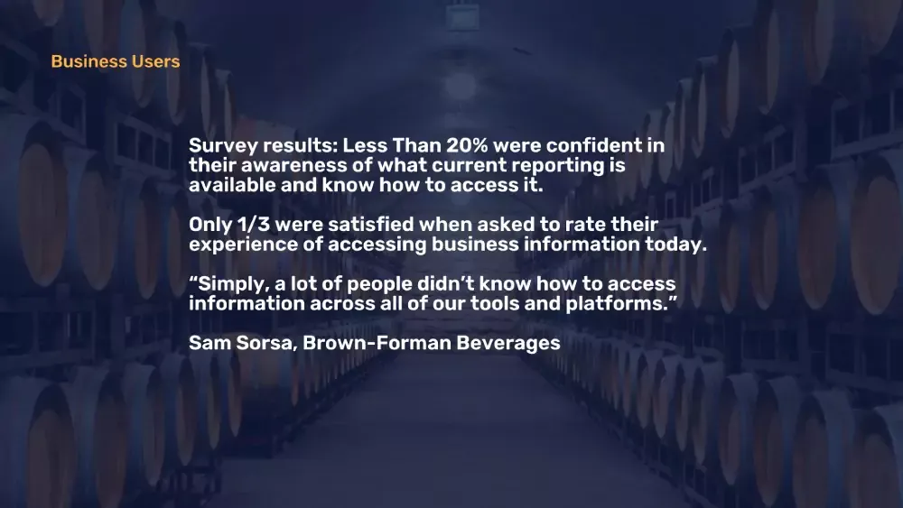
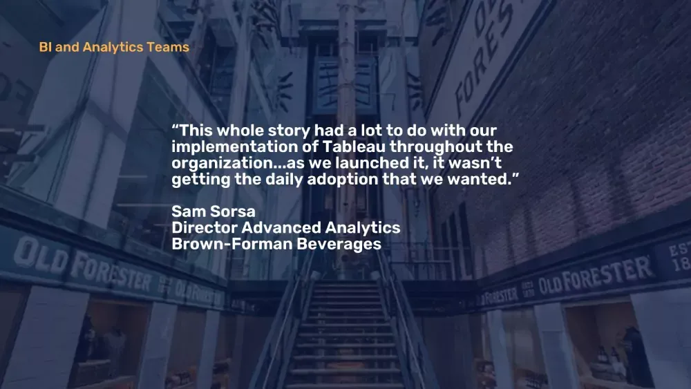
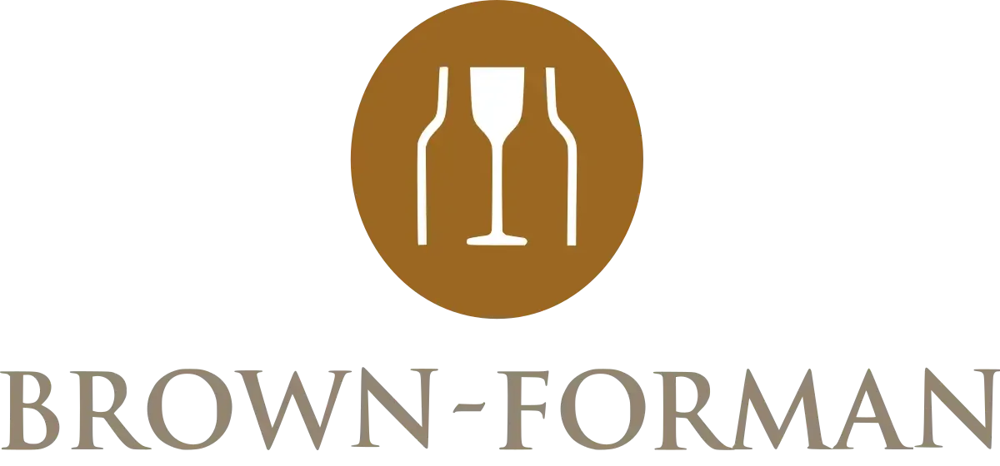
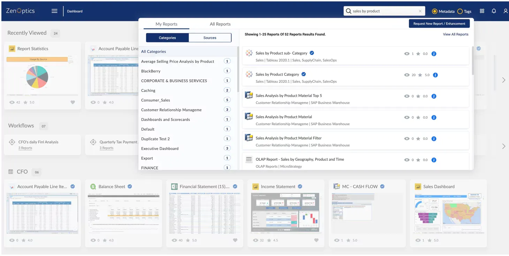
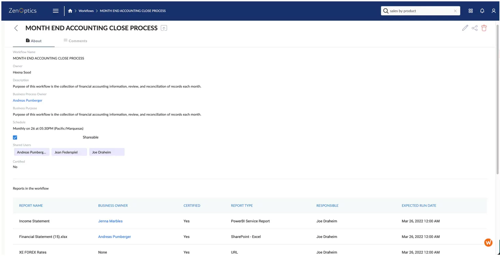
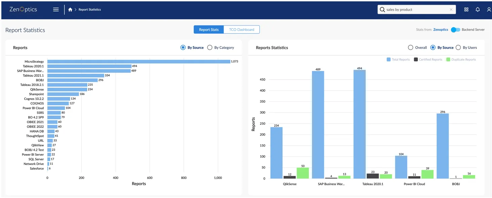
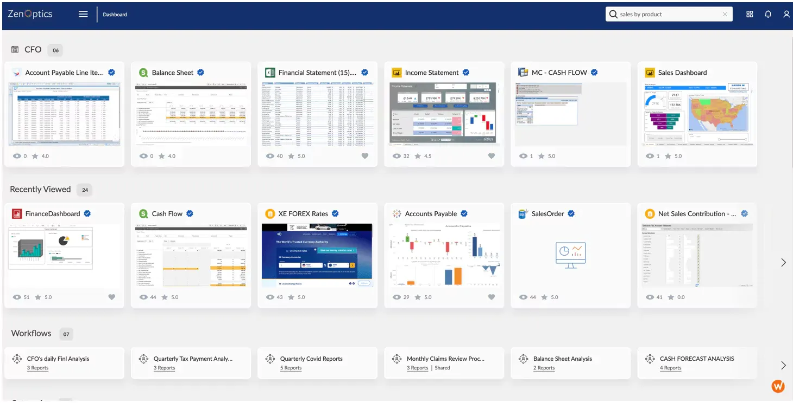

The Decision Intelligence Platform
AI-Powered | Analytics Ops • Analytics Catalog • Analytics Governance
Contact Us
Organizations Transforming their BI and Analytics with ZenOptics


Many organizations have:
360+
SaaS Applications with Embedded Analytics
4+
BI and Analytics Platforms
30%
Increased Spreadsheet Usage
ZenOptics is a Unified Hub for BI and Analytics Assets
By creating a single access point that connects to all your BI and reporting tools, an analytics hub simplifies the discovery, use, and management of analytics assets such as reports, dashboards, spreadsheets, and more.

Atlas (Know)
What analytics do we have, and can we trust them? Atlas catalogs, certifies, and governs every analytics asset across your BI tools.
Nexus (Understand)
How do teams and AI systems interpret our analytics consistently? Nexus builds the context layer that connects meaning across people and AI agents.
Maestro (Act)
How do we ensure the right analytics drive the right decisions? Maestro orchestrates analytics-driven processes with AI-governed execution and full traceability.
Consumable Experience
Interactions are designed to increase the consumption of all your analytics. The interface allows users to focus on what is critical and guides them to the appropriate asset with business context.



Driving Analytics Adoption at Brown-Forman
Recognizing they weren’t getting the analytics adoption they desired, the enterprise team went to the source and surveyed their internal customers. The resulting solution: a one-stop-shop for easy access to analytics
Download Case StudyThe Power of Simplicity for Analytics
Streamlined Search and Access
Report sprawl across various BI and analytics tools complicates the process of finding and accessing meaningful data.
Business users benefit from intuitive search across connected analytics sources to discover the relevant information they need.

Sharable Workflows for Consistency
Business activities and processes require collaboration and consistency, which is difficult to achieve when people and analytics assets are spread across multiple locations.
Business teams can define and compose collections of analytic assets to support business activities and processes.

Analytic Usage Statistics
Without understanding the volume and usage of analytics assets, the ecosystem of reports becomes unwieldy and difficult to manage.
Visibility of volume and report usage from across all connected applications gives organizations the ability to rationalize and optimize their analytic investments.

Designed for Business Users
The experience of logging into multiple tools and applications – each with a different look and feel – makes it cumbersome for business users to navigate and easily interact with reports.
Business users want a consistent, intuitive interface that is tailored to their information needs.

Who Benefits from an Analytics Hub?
People from across the organization face problems that ZenOptics can solve. From the executive team to IT to business analysts, these are some common challenges we hear: